항공모함 관련 잡담 (6.24)
게시: 2021-06-24T06:30:42+09:00
<왜 미드웨이 해전에서 일본해군은 그렇게 바보처럼 굴었나> 표면적으로 보면 일본해군이 미드웨이 육상기지를 한번 더 공격할까 아직 탐지하지도 못한 미항모들을 공격할까 망설이다가 습격을 받는 바람에 망한 것이지만, 좀더 사정을 살펴보면 궁극적으로는 당시 항모들은 (미국이나 일본이나) 함재기들을 착함시킬 때는 아무 것도 이함시킬 수가 없다는 것, 반대로 이함시킬 때는 아무 것도 착함시킬 수가 없다는 것에 원인이 있음. 당시 일본해군은 미드웨이 1차 공격을 갔다가 돌아오는 함재기들을 착함시키느라 예비로 두었던 2차 공격대를 이함시킬 수가 없었음. (그럴 바에야 2차 공격대를 왜 우물쭈물 남겨뒀는가라는 비난은 피할 수 없음) 암튼 당시 이착함이 동시에 수행될 수 없는 이유는 저 직선 비행갑판 때문. 이함하려는 항공기들은 비행갑판 앞쪽 절반, 캐터펄트를 쓰는 경우는 1/3 정도만 있어도 되지만, 그때 뒤에서 다른 함재기들이 착함한다면 어레스팅 와이어에 걸지 못한 경우 앞에 이함 직전의 함재기와 충돌할 위험이 있기 때문에 착함 또는 이함을 포기해야 함. 그래서 저 사진처럼 다음 차례로 이함하는 함재기들이 아예 착함 갑판을 차지하고 있는 것. 이 문제를 완벽하게 해소해준 것이 바로 angled flight deck. 전에 설명했듯이 실은 이 angled flight deck은 원래 이 문제를 해소하려고 만든 것은 아니라 고무 갑판을 테스트하다가 만든 것이지만 아무튼 그로 인해 이착함이 (이론상으로는) 동시에 일어날 수 있게 됨.
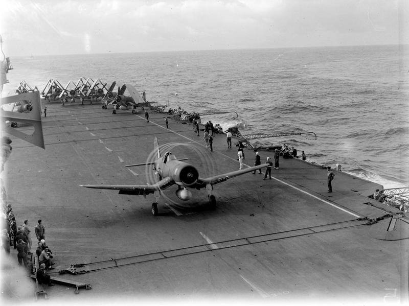 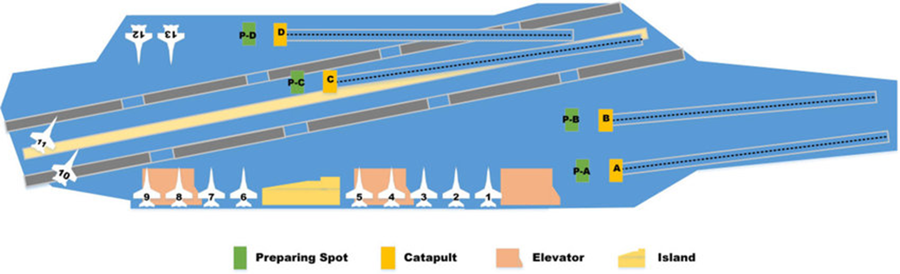
<Shipborne rolling vertical landing (SRVL)이란?> F-35B는 STOVL(Short Take Off Vertical Landing) 함재기. 뜰 때 최대 무장량 연료량 다 싣고 뜨는 경우도 별로 없지만 아무튼 최대 무장량 6.8톤에 연료도 6.2톤. 그런데 수직착함을 하려면 그거 다 싣고는 도저히 수직착함이 안 됨. 연료+무장 합해서 대략 2~3톤만 가능. 즉, 혹시 폭탄을 많이 달고 출격했다가 무슨 이유로든 폭탄 안 쓰고 온다면 폭탄을 바다에 버리고 착함해야 함. 이걸 극뽁하려고 영국 해군이 기를 쓰고 있는 것이 SRVL. 요약하면 수직착함과 활주착함을 결합해서 약간 활주도 하면서 수직착함하는 것. 이럴 경우 약간 더 많은 무장과 연료를 싣고도 착함이 가능. 그러나 고정된 위치도 아니고 20~30노트로 달리는 항모 갑판에 그렇게 내려앉는 것이 결코 쉽지 않음. 그래서 조종사 헬멧에 적정 하강 코스를 보여주는 장치도 따로 개발했다고. 암튼 이 기술은 현재도 연습하는 중이며 완성된 단계는 아님. 근데 또 문제가 이런 식으로 착함하려면 F-35B의 하향 노즐이 비행갑판의 상당 부분을 그을리게 된다는 것인데, HMS QE야 그렇다치고 USS America 같은 LHA는 딱 일부 구역만 Thermion이라는 특수자재로 방열처리를 해놓은지라, 저런 SRVL를 쓰기가 곤란할 듯. 특히 이런 SRVL이 보통일이 아닌게, 아래 그림처럼 이런 착함은 조종사의 숙련도도 매우 중요하지만 대기 상태와 항모의 속도와 해상 상태까지 고려해야 한다. 가령 뜨거운 여름철엔 공기 밀도가 낮아지므로 착함할 때 중량을 더 줄여야 한다. 조종사가 기체에 남은 연료와 무장 잔량에 항모의 속도, 파고, 풍속, 그리고 온도까지 고려해서 착함한다는 것이 보통 쉬운 일이 아니다. 그래서 영국해군에서는 Bedford Array Light라든가 헬멧에 장착되는 Glideslope라든가 하는 착함 보조 시스템을 개발 중이라고. 그러나 이런 문제에 덧붙여, 항모의 작전효율은 물론 생존성을 위해서는 빠른 이착함이 생명. 아무리 강력한 총이라도 1분에 1방 쏠 수 있는 총보다는 1분에 120발 쏠 수 있는 총이 더 좋은 법인데, SRVL에 시간이 얼마나 걸리는지 미지수 (아직 완성된 기술이 아니니까). 아무리 냉면이 맛있다고 해도 한테이블 회전시키는데 1시간이 걸린다면 그 냉면집은 망한다.
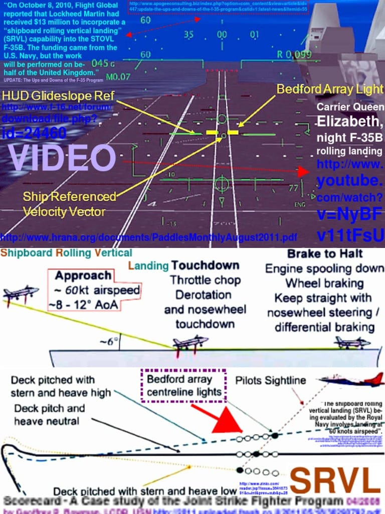
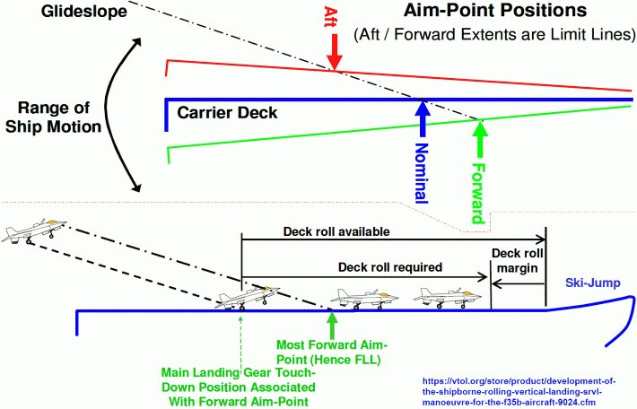
<뚱뚱하면 많은 문제가 해결된다> HMS Queen Elizabeth 및 미국의 경항모라 할 수 있는 amphibious ships (LHA, LHD 등, 준말로는 amphib이라 하더이다) 등의 특징은 다른 항모들과는 달리 angled flight deck이 없다는 것이 특징. 이건 캐터펄트 유무와는 무관. 러시아의 Kuznetsov 및 중국 산뚱 등의 항모에도 캐터펄트는 없지만 angled deck은 있음. 그 핵심 차이는 arresting gear가 있느냐 없느냐의 차이. 즉 HMS Queen Elizabeth 및 LHA 등은 모두 수직 착함하는 함재기만 수용 가능. Short take off라고 해도 캐터펄트가 없으면 이함할 때 거의 전체 flight deck을 다 써야 하는데, 문제가 없을까? 당연히 있음. 비행갑판을 비워놔야 하는데 그러면 그동안에 착함은 어디에 하고 대기 함재기들은 어디에 앉아있어야 하나? 이건 매우 간단하게, HMS QE처럼 그냥 뚱뚱하면 됨. 중앙에서 활주해서 이함을 하시구요, 대기조는 사이드 라인에 자리 넓으니까 거기서 구경할게요. ** 남자든 여자든 뚱뚱하면 인생의 많은 문제가 해결된다. 물론, 그에 따라 다른 문제가 생기기도 하지만 없어지는 문제에 비할 바가 아니다. 뚱뚱해지는 것을 두려워하지 말자.
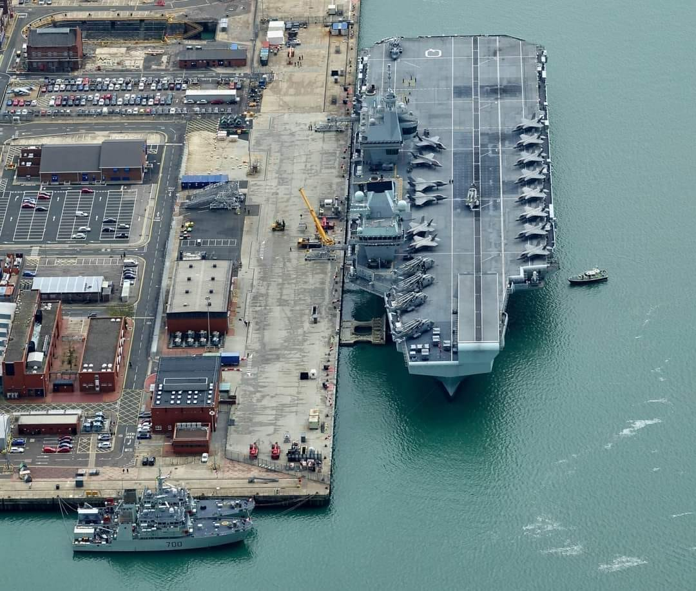
<흑해에는 왜 항모가 진입하지 못하나> 소련, 아니 러시아의 Kuznetsov는 정식 분류가 항공모함이 아니라 '중형 항공기 탑재 순양함'. 주된 이유는 저 항모의 주무기는 시시한 함재기 따위가 아니라 수직 발사되는 사정거리 550km의 P-700 Granit 함대함 미쓸이기 때문. 함재기는 그저 쿠주네초프의 상공을 지키고 적함이 어디에 있는지 찾는 역할. 그러나 그에 못지 않게 중요한 이유가... 1936년 Montreux Convention에 의해 1만5천톤 이하의 경항모가 아닌 이상 흑해와 에게해를 연결하는 보스포러스 해협을 통과할 수 없도록 정해졌기 떄문. 생각해보니 흑해에 미국 구축함이나 심지어 프랑스 전투기가 휘젓고 다니는 경우는 있지만 미해군이든 로열네이비든 항모가 들어갔다는 이야기는 들은 바가 없음.
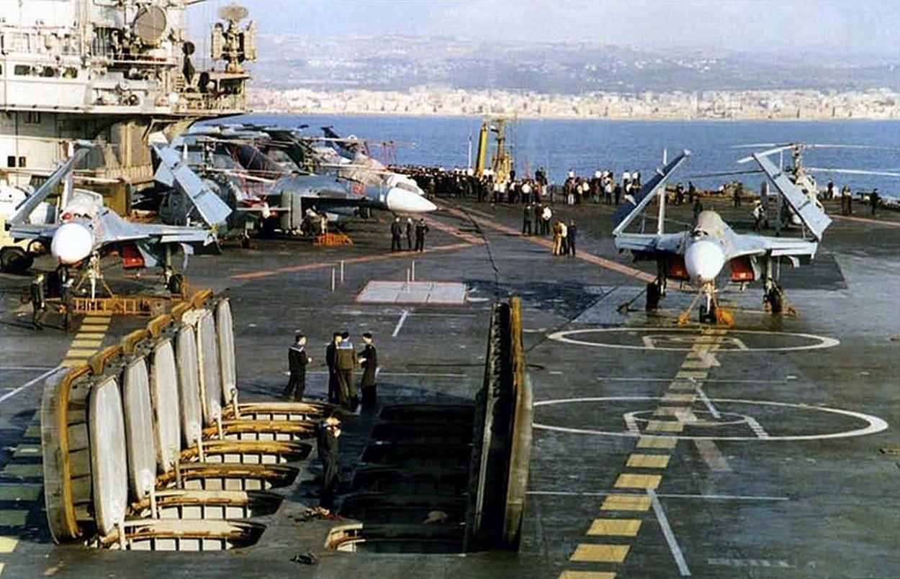 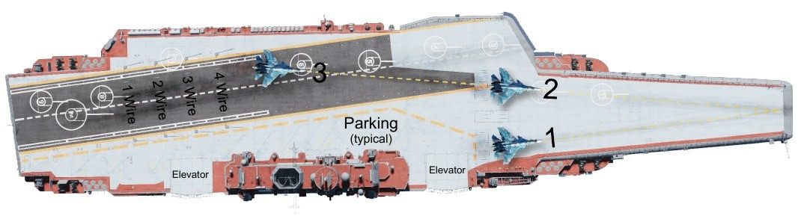 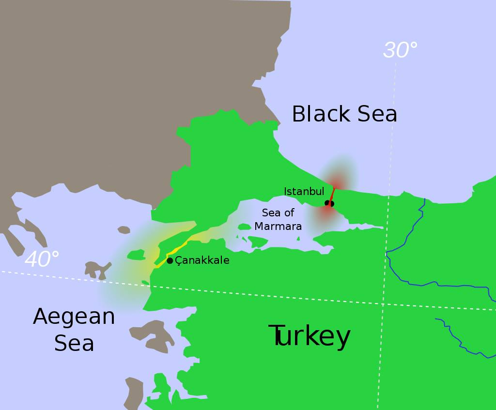
<탑재할 함재기도 없지만 일단 만들어 보았슴다> 1941년 마타판 해전에서 영국 항모 HMS Formidable에서 출격한 뇌격기들에게 농락당한 탓에 제대로 힘도 못 쓰고 결국 야간전투에서 로열 네이비에게 큰 손실을 입은 이탈리아 해군이 부랴부랴 여객선을 개조하여 만들던 항모 Aquila ("독수리"). 결국 완성 못하고 1943년 이탈리아가 항복하는 바람에 독일군이 압류 후 제노아 항구 봉쇄용으로 자침시킴. 전후에 건져서 항모로 취역시킬 것을 고려했으나 결국 고철로 팔아먹음.
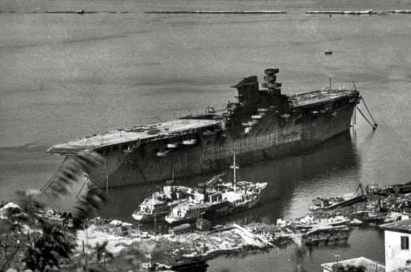 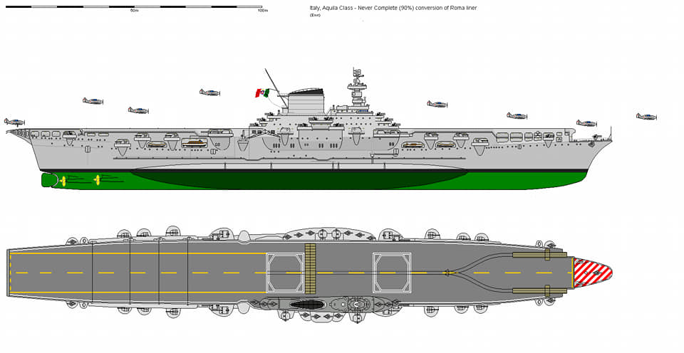
<18~19세기 로열 네이비 최강의 병기> ...는 바로 수병들. 이건 당시 모든 나라 해군들의 공통점. 적함을 공격하건 적의 해안 요새를 공격하건, 하수들이나 대포를 쏘며 공격했고 고수들은 야간에 조용히 접근하여 보트에 무장 수병들을 잔뜩 실어보내 백병전으로 승부. 아래 그림은 1799년 로열 네이비의 프리깃함 HMS Surprise가 베네주엘라의 스페인 항구에서 프리깃함 Santa Cecilia를 나포해서 빼내온 사건을 그린 전쟁화. ** 경항모에 F-35B 없이 해병대와 기동헬기, 공격용 헬기만 싣고 어슬렁거리기만 해도 북한 해안 지대에 꽤 심각한 위협.
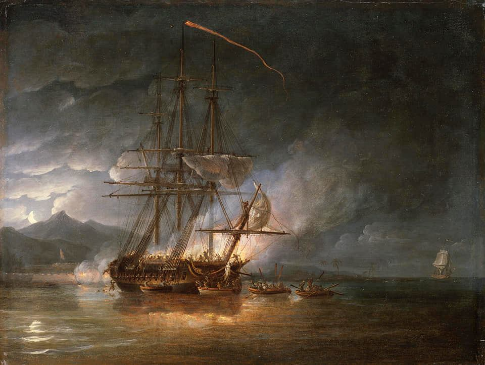 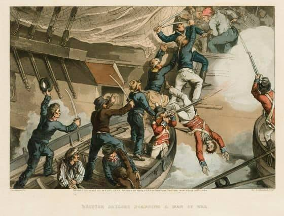
<갑판에 페인트칠 해주고 승진?> 페인트가 생각보다 비쌈. 그래서 쌍팔년도에는 대학생들끼리 '넌 아빠가 대학건물에 페인트칠 해주고 입학한거지?'라는 농담이 유행. F-35B가 수직착륙할 때 갑판에 내뿜는 배기가스는 1천5백도에 이르기 때문에 강철도 녹임. 그걸 막기 위한 내열 코팅은 Thermion이라는 특수재질인데 당연히 비쌈. 그래서 USS America같은 미국 경항모(LHA)는 갑판 일부 구역에만 Thermion coating을 하고 거기에만 F-35B가 착륙하도록 함. HMS Queen Elizabeth의 갑판에도 일부 구역만 색깔이 다르고 거기만 그을린 자국이 있음. 찾아보니 특정 구역에만 특수 코팅을 한 것은 아니고 전체적으로 한 것처럼 되어있으나 명확한 설명은 없음. HMS QE의 갑판 코팅은 영국이 자체 개발한 것이고, 50년간 보수를 하지 않아도 된다고 주장. 그러나 저걸 갑판에 온도 1만도의 플라즈마로 도포하기 위해 특수 로봇까지 별도 개발했고 온도와 습도 유지하느라 도포작업에 1년이 걸렸다니, 가격은 매우 비쌀 듯.
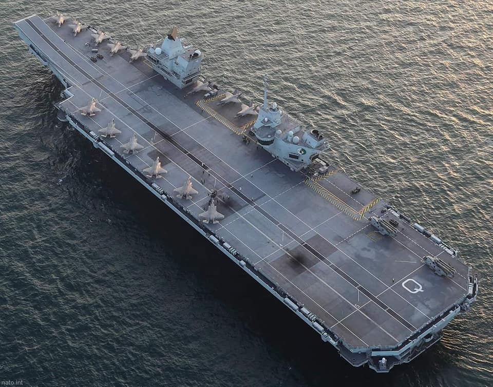 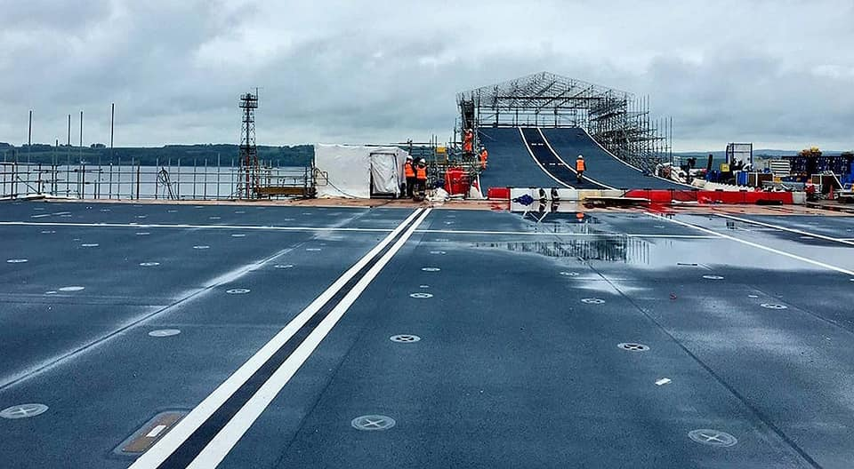
<갑판 위에 왜 모래를?> 19세기 중반까지 유럽 군함들이 전투 준비(beat to quarters)에 들어갈 때 준비하는 것 중 하나는 갑판에 모래를 뿌리는 것. 많은 경우 대포로 목조 군함을 격침시키는 것은 어려웠으므로 결국 boarding party가 한손에 피스톨, 다른 손에 칼(cutlass)를 들고 적함에 뛰어들어 백병전으로 끝장을 보는 것이 보통. 이때 갑판은 함포 포강을 닦아내고 식히기 위한 양동이물로 젖은 상태가 대부분인데, 그러면 맨발의 수병들이 미끄러지기 쉬우므로 미끄럼 방지를 위해 모래를 뿌리는 것. HMS QE의 내열 비행갑판 코팅은 3겹으로서, 맨 위는 anti-skid처리를 겸한 것인데 정말 모래가 섞여있다고. 그야말로 바닷물에 젖은 모래가 깔린 갑판의 로망이 재래함.
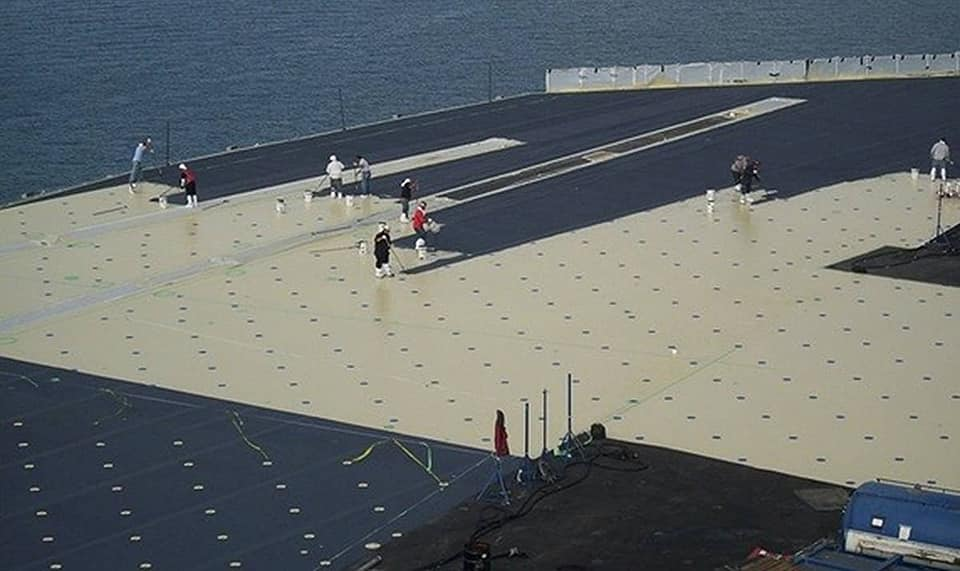
<언제 배를 포기해야 하나?> 대개 전함이나 항모나 뇌격된 이후엔 뒤집히며 침몰하는 경우가 많은데 일단 뒤집힐 때는 아무도 살아나가지 못하므로 일정 각도까지 배가 기울면 함장이 "Abandon ship"을 외쳐야 함. USS Yorktown은 26도, HMS Ark Royal은 27도 기울었을 때 선언. ** 실제 배가 급속도로 뒤집히는 건 45도까지 기울었을 때. ** 사진1 Yorktown. 사진2 HMS Ark Royal.
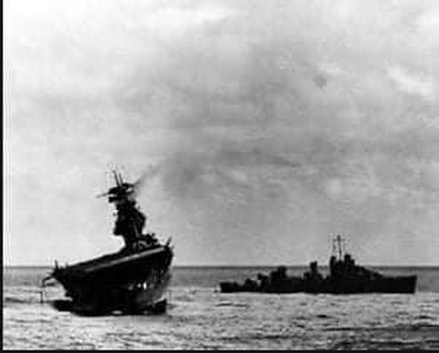 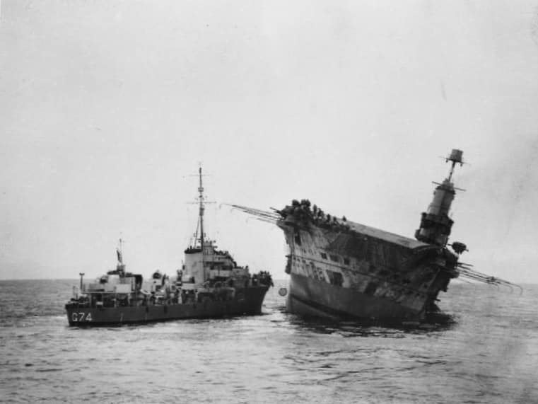